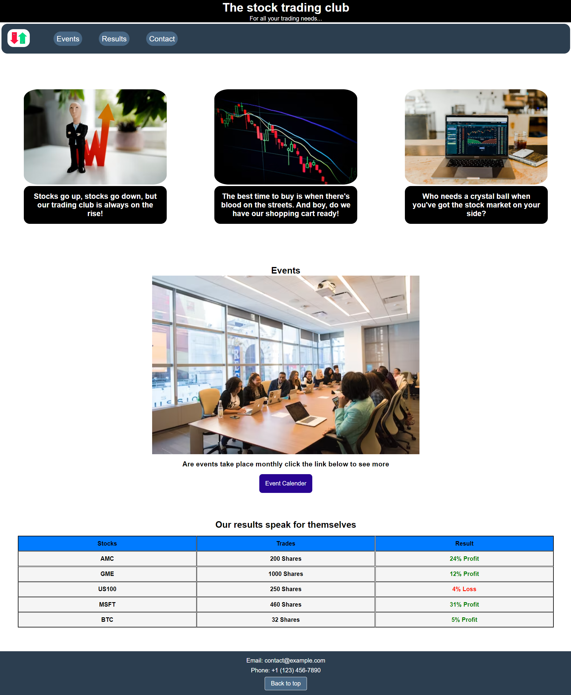
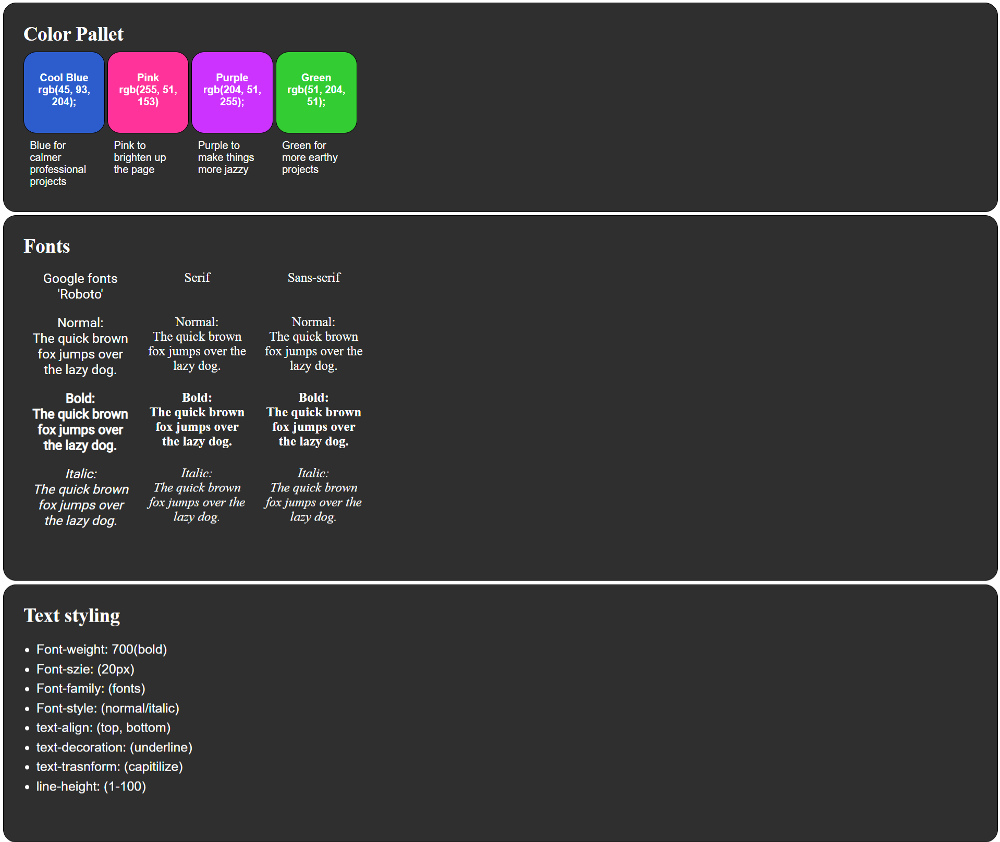

About me
Hello, I'm Alex, a passionate and dedicated individual on a journey to become a front-end developer. At 26 years old, I've spent
the past year immersing myself in the world of coding, constantly pushing myself to learn and grow in this exciting field.
Currently, I work as a senior healthcare assistant in a psychiatric hospital, where I've gained valuable experience in providing
compassionate care and support to patients. This role has taught me the importance of empathy, patience, and effective communication
skills that I believe will greatly benefit me in my pursuit of a career in web development.
I hold a 2:1 degree in psychology, which has
deepened my understanding of human behavior and cognition. This background enables me to approach web development with a unique
perspective, considering both usability and user experience in my designs. Front-end development has captured my interest, as I find
joy in creating visually appealing and interactive interfaces that enhance user engagement.
I'm drawn to the ever-evolving nature of
this field, constantly seeking to stay updated with the latest technologies and industry best practices. With a strong foundation in
coding and a genuine passion for front-end development, I am now actively seeking opportunities to transition into this exciting sector.
I am eager to contribute my skills, creativity, and drive to create impactful and user-friendly web experiences. Join me on this exciting
journey as I continue to expand my knowledge, refine my skills, and embark on new and challenging projects. Together, let's shape the
digital world with innovation and meaningful user experiences.
Learning Projects
Trading Club
Styling CheatSheet
Tea Cozy Project